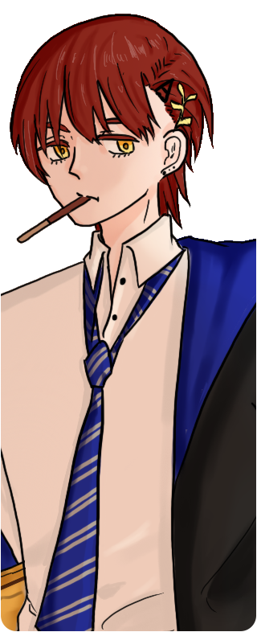
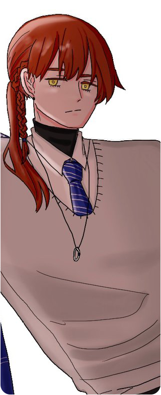
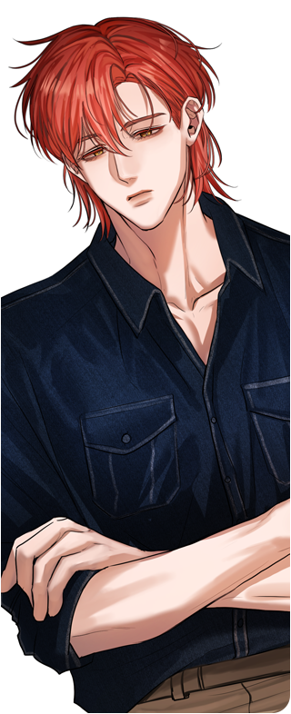
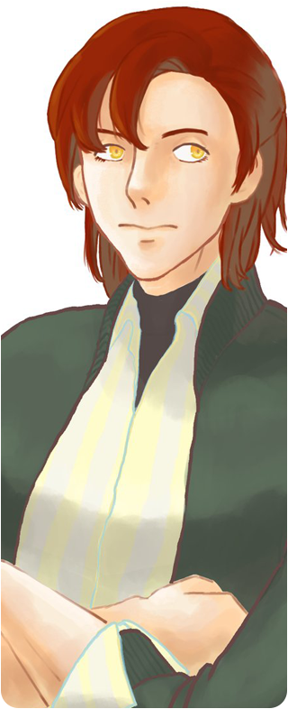
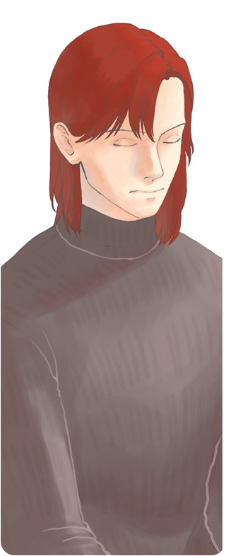
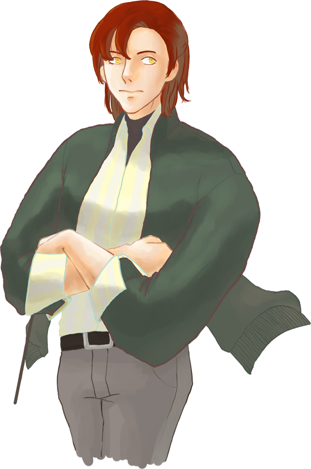

Pyrros Macklemore
피로스 맥클레모어





[ 플레이팅까지 완벽하게 ]
“ 온도 좀 올릴까, 차가움이 녹도록. ”
나이
27세
기숙사
래번클로
“너의 괴짜 같은 기질을 전부 쏟아봤으면 좋겠구나.”
진영
불사조 기사단
직업
요리사
국적
영국인
혈통
순수 혈통
키/무게
189.5cm/93kg
성별
시스젠더 남성
지팡이
자두나무/유니콘의 털/11.5인치/뻣뻣함
성격
# 시리도록 차가운
노력해도 빠지지 않는 특유의 찬 기가 있다. 학창 시절에 단 한 순간도 성적이 좋았던 적은 없지만 청동 독수리상 문제만큼은 문제 없이 돌파하며 기숙사를 드나들었던 만큼, 논리와 합리를 따지는 특유의 성질이 유지되고 있다. 이는 피로스를 이루는 한 축이다. 해야만 하는 일이며 ‘왜’ 그러한지를 검토하고 따질 때, 혹은 철학과 인간다움을 논할 때, 윤리와 도덕을 가늠할 때, 마땅히 그러해야 하는 것이 무엇인지 인간으로 태어나 알아야만 했던 인간의 본질을 사유할 때 차가움이 도사린다. 특유의 통제 성향이나 완벽주의라고 특별히 나아지지는 않았다.
# 아찔하게 타오르는
마찬가지로 시간이 흘러도 식지 않는 열기가 있다. 좋아하는 사람들을, 이왕이면 맛있는 것으로 배불리 먹이고 싶어 한다. 혹은, 한때 사랑했던 이들의 행복을 기원한다. 옳다고 판단한 것, 추구하겠다고 마음 먹은 길에서 후퇴하는 법이 없으며 특유의 고집도 여전하다. 이루고자 하는 바를 끝까지 이루고자 하는 열망, 올바르다고 믿는 신념을 끝까지 놓지 않는 굳건함, 혹은 사랑하는 사람들을 끝까지 사랑하겠노라는 선언, 그것이 피로스를 타오르게 만드는 불씨다. 여전히 웬만하면 타인의 인간성을 믿는다, 나사가 살짝 빠진 긍정론도 여전하다.
# 혹은 그 사이
그는 어느 한 조각만으로는 이루어지지 않았다. 차가운 문학과 따뜻한 식문화 사이의 교집합에 피로스 맥클레모어가 서 있다. 다면적인 인간이며, 누군가가 느끼기엔 여전히 이렇게 느껴질 수가 있겠다. ‘착한 건지 나쁜 건지 판단이 어려운 괴짜’, ‘이상한 사람’, 그러나 피로스는 아랑곳하지 않고 자신만의 온도를 유지한다. 차갑거나, 타오르거나, 혹은 그 사이의 온도. 이 복잡한 성정을 이해해도 좋다. 그러나, 이해하지 않는다고 해도 괜찮다. 미묘한 균형은 유지된다, 그가 살아 있는 한, 딱 그 찰나만큼은.
기타
● 스코틀랜드 에든버러 출신, 할아버지와 단둘이 성장한 조손 가정 출신.
○ 할아버지 리처드 맥클레모어는 희곡 작가로 그리스 비극에 뿌리를 둔 연극 대본을 쓰고 극을 연출했다. 대표작으로 <헤라클레스의 활>과 <필라데스>가 존재한다.
○ 27세 시점, 피로스 맥클레모어의 조부는 돌아가신 상황이다.
○ 스코틀랜드 억양이 상당히 세며, 목소리가 낮고 독특해서 한 번에 알아듣기 쉽다.
● 초등학교를 나오지 않았고, 유년 시절은 홈스쿨링으로 때웠다. 호그와트도 머글 사회 쪽에선 사실상 없는 학력이지만 셰필드에서 평범하게 사는 소시민이라 누가 득달 같이 와서 학력을 확인한 적은 없다.적당히 미들 스쿨 나왔어요, 기숙학교였어요, 하고 마는 정도다.
● ‘피로스’라는 이름은 그리스 비극과 베르길리우스의 서사시에 등장하는 영웅 네오프톨레모스의 별명에서 따왔다.
● 호그와트에 재학하던 시절부터 문인인 할아버지의 영향으로 희곡 문학을 쭉 써왔다.
● 청소년기 전반을 미식 동호회라 불리는 서클 중심으로 보냈으며, 이 서클 문제로 할아버지와 큰 갈등을 겪었다. 그 갈등의 여파로 진로를 선택할 때 그토록 사랑하는 문학이 아니라 자신을 행복하게 만들었던 미식의 길, 요리를 선택했다.
● 호메로스의 부엌
미식 동호회 출신인 두 사람이 얼어붙은 취직 시장에 이리 치이고 저리 치이다가 있는 돈도 탈탈 털고 부모님께 싹싹 빌어서 셰필드에 창업한 식당. 식당 자체는 작은데 음식이 괜찮아서 성업 중이다. 오픈키친이며 테이블 수가 많지는 않으나 가끔 대기 줄이 생긴다. 오후 3-4시 쯤엔 손님이 별로 없어서 놀러오면 한가한 셰프들과 수다나 떨며 식사할 수 있다.
식당 이름이 저렇게 된 까닭은 두 창업자의 이름이 ‘아실 오브라이언’(아실은 아킬레우스의 영문명)과 ‘에이든 헥터 패터슨’(미들네임인 헥터가 헥토르의 영문명)이라 둘 다 이름에 호메로스의 영웅들이 들어갔기 때문이었는데 하필 직원으로 피로스를 채용하며 손님들을 더욱 혼란에 빠트렸다. 식당 이름은 호메로스고 직원들 이름은 그리스 영웅들인데, 여기 그리스 음식을 팔지 않아…. (본 식당은 튀르키예 음식과 이탈리아 음식을 오가며 퓨전을 시도하고 있다. 어쨌든 맛있다.)호메로스의 부엌에서 근무하는 직원은 총 셋이고, 정확한 구성은 공동 창업자 둘에 피로스가 직원으로 낀 구도다. 미식 동호회에서 만난 이들이라 셋 다 호그와트 출신이지만, 피로스를 빼고 나머지 둘은 머글 태생과 혼혈이다 보니 원래도 머글 사회에 익숙했던 사람들이라 크게 머글들에게 수상한 식당이라는 의심을 사진 않는다. 피로스도 거의 머글 사회에 적응했다.
● 어디에 발표하진 않았으나 졸업 후로도 수많은 극을 썼다. 어려서부터 쭉 그렇게 살았고, 호그와트를 재학하며 친구들과 다양한 대화를 나누며 할아버지와 무관하게 자신은 문학마저 사랑한다는 사실을 알았던 까닭에…. 퇴근하고 책을 읽고 글을 쓰고 잠드는 게 일종의 루틴이다. 문학사적 지식 하나만큼은 여전하다.
○ 현재의 좌우명은, 행복해지기 위한 요리를 할 것, 그리고 인간이 되기 위한 문학을 할 것.
○ 예술가적 기질이 여전하다. 잘못 건드리면 그리스 비극에서 셰익스피어, 체호프, 베케트 등으로 연결되는 문학사적 지식을 출력한다. 혼자서 2시간은 거뜬히 떠들기 때문에 식당에서도 ‘저 셰프한테 그거 물어보지 마, 디저트까지 먹었는데도 2시간 동안 식당에 갇혀서 못 나가!’라는 불문율이 생겨났다. (“아직 사무엘 베케트에 대한 설명이 남았습니다, 손님, 어디 가시는 거죠….”)
● 주로 이탈리아 가정식을 토대로 한 음식을 하지만, 딱히 못하는 요리는 없다. 베이킹도 좋아하고, 영국 집밥도 최대한 맛있게 만들어서 내놓는다. 전장에선 웬만하면 따뜻한 음식을 하자는 신념이 있다. 실제로 전장에서는 따뜻한 걸 먹어야 사기가 올라간다는 통계가 있다는 모양이다.
● 살기 위해 운동하는 게 아니라, 먹기 위해 운동한다. 여전한 대식가라서 아침마다 건강은 챙긴다. 본인도 본인이 이렇게까지 열심히 살게 될 줄 몰랐다는 말을 자주 한다.
● 주당, 주종을 가리지 않는다. 구태여 좋아하는 주종을 따져 묻는다면 위스키를 고르지만, 이왕이면 그 지역에 맞는 술을 안주 맞춰서 먹는 게 좋다는 모양. 흡연은 하지 않는다. (일단간 요리사니까 미각이 중요해서.)
● 현재 거주지는 사우샘프턴, 2000년부터 2003년까지 지금은 혼자 살고 있는 그 집에서 케일럽과 룸메이트로 살았다. 케일럽은 사정상 그 집을 먼저 떠났지만, 벽난로가 있는 사우샘프턴의 투룸을 지키고 있으면 케일럽이 가끔 플루가루를 타고 놀러오므로 출퇴근은 순간이동으로 하면 그만이니까 피로스는 여전히 그 집에서 지내고 있다. 집 계약 조건도 좋아서 여러모로 아직은 이사 갈 이유가 없다는 모양이다.
● 머글 세계의 식당에서 근무하며 바이크를 한 대 샀다. 식당에서 식자재가 급히 부족한 경우에 사용하며(식자재 마트를 순간이동으로 갔다가 행여나 머글에게 들키면 아즈카반 행이므로) 셰필드 시내를 돌아다니는 정도다. (날아다니진 않는다.)
● 식당에 주차 공간이 없고 저축도 해야 하니 차는 아직이다…. 운전 면허는 땄다.
● 21살에 연애사가 한 번 있었다. 6살 연상의 머글 여성. 1년 반 가까이 만나다가 헤어졌다. 아무래도 피로스 쪽이 비밀이 많아서 오해가 많이 쌓이고 막판에 많이 싸우고 삐걱였던 모양.
● 오픈키친에서 근무하지만 그밖에도 크게 인기몰이하진 않았다. 붙잡히면 문학사 강의 2시간 하니까 아무래도 호불호가 갈려서….
● 새천년을 넘어오며 웬만한 연락은 휴대폰 및 이메일로 하고, 부엉이 우편은 단순히 마법사 사회에 남겨두고 온 이들과 연락하기 위하여 사용했다. 이용하는 부엉이는 근무하는 식당에서 셋이서 같이 돌보고 사용하는 일종의 직장 공동 부엉이, 연한 갈색 깃털에 동그랗고 몸집이 작다. 치명적인 그 이름, ‘헬레네’다. (“치명적으로 귀엽지.”)
○ 요컨대, 호그와트를 졸업한 이후 대체로 머글 사회에서 일상을 보낸 사실상 ‘명예 머글 태생’.
● 기사단에 가담하여 주로 수행한 역할은 아무래도 일종의 취사병이다. 밥하고, 먹이고, 전투에 손이 모자라다면 전투에 참여한다. 여전히 전투가 좀 무섭긴 하지만, 각오도 없이 가담한 것은 아니라서 가급적 담담하고자 노력한다. 그래도 기본적으로 그의 포지션은 ‘너희는 잘 먹여졌다’가 맞다.
